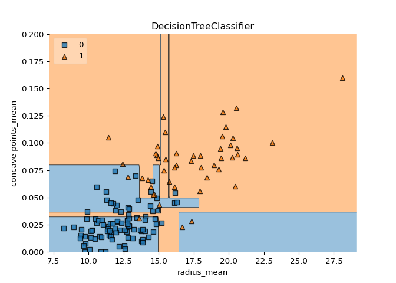
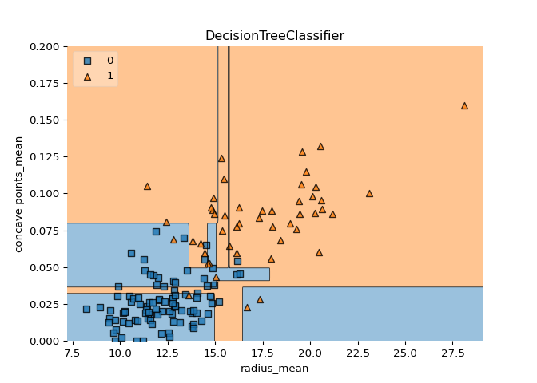

Classification and Regression
Contents
Classification and Regression#
Classification and Regression Trees (CART) are a set of supervised learning models used for problems involving classification and regression. In this chapter, you’ll be introduced to the CART algorithm.
Decision tree for classification#
Train your first classification tree#
In this exercise you’ll work with the
Wisconsin
Breast Cancer Dataset from the UCI machine learning repository.
You’ll predict whether a tumor is malignant or benign based on two
features: the mean radius of the tumor (radius_mean) and
its mean number of concave points (concave points_mean).
The dataset is already loaded in your workspace and is split into 80%
train and 20% test. The feature matrices are assigned to
X_train and X_test, while the arrays of labels
are assigned to y_train and y_test where class
1 corresponds to a malignant tumor and class 0 corresponds to a benign
tumor. To obtain reproducible results, we also defined a variable called
SEED which is set to 1.
DecisionTreeClassifier from
sklearn.tree.
DecisionTreeClassifier dt of
maximum depth equal to 6.
dt to the training set.
y_pred.
# edited/added
import pandas as pd
import sklearn
from sklearn.model_selection import train_test_split
import matplotlib.pyplot as plt
df = pd.read_csv('archive/Machine-Learning-with-Tree-Based-Models-in-Python/datasets/wbc.csv')
label_encoder = sklearn.preprocessing.LabelEncoder()
label_encoder.fit(df['diagnosis'])
## LabelEncoder()
X= df[['radius_mean', 'concave points_mean']]
y = label_encoder.transform(df['diagnosis'])
X_train, X_test, y_train, y_test = sklearn.model_selection.train_test_split(X,y)
SEED = 1
# Import DecisionTreeClassifier from sklearn.tree
from sklearn.tree import DecisionTreeClassifier
# Instantiate a DecisionTreeClassifier 'dt' with a maximum depth of 6
dt = DecisionTreeClassifier(max_depth=6, random_state=SEED)
# Fit dt to the training set
dt.fit(X_train, y_train)
# Predict test set labels
## DecisionTreeClassifier(max_depth=6, random_state=1)
y_pred = dt.predict(X_test)
print(y_pred[0:5])
## [0 1 0 1 0]
Awesome! You’ve just trained your first classification tree! You can see the first five predictions made by the fitted tree on the test set in the console. In the next exercise, you’ll evaluate the tree’s performance on the entire test set.
Evaluate the classification tree#
Now that you’ve fit your first classification tree, it’s time to evaluate its performance on the test set. You’ll do so using the accuracy metric which corresponds to the fraction of correct predictions made on the test set.
The trained model dt from the previous exercise is loaded
in your workspace along with the test set features matrix
X_test and the array of labels y_test.
accuracy_score from
sklearn.metrics.
y_pred.
dt by calling
accuracy_score() and assign the value to acc.
# Import accuracy_score
from sklearn.metrics import accuracy_score
# Predict test set labels
y_pred = dt.predict(X_test)
# Compute test set accuracy
acc = accuracy_score(y_test, y_pred)
print("Test set accuracy: {:.2f}".format(acc))
## Test set accuracy: 0.92
Not bad! Using only two features, your tree was able to achieve an accuracy of 89%!
Logistic regression vs classification tree#
A classification tree divides the feature space into rectangular regions. In contrast, a linear model such as logistic regression produces only a single linear decision boundary dividing the feature space into two decision regions.
We have written a custom function called
plot_labeled_decision_regions() that you can use to plot
the decision regions of a list containing two trained classifiers. You
can type help(plot_labeled_decision_regions) in the IPython
shell to learn more about this function.
X_train, X_test, y_train,
y_test, the model dt that you’ve trained in an
earlier
exercise
, as well as the function plot_labeled_decision_regions()
are available in your workspace.
LogisticRegression from
sklearn.linear_model.
LogisticRegression model and assign it to
logreg.
logreg to the training set.
plot_labeled_decision_regions().
# edited/added
import mlxtend.plotting
def plot_labeled_decision_regions(X_test, y_test, clfs):
for clf in clfs:
mlxtend.plotting.plot_decision_regions(np.array(X_test), np.array(y_test), clf=clf, legend=2)
plt.ylim((0,0.2))
# Adding axes annotations
plt.xlabel(X_cols[0])
plt.ylabel(X_cols[1])
plt.title(str(clf).split('(')[0])
plt.show()
X_cols = df[['radius_mean','concave points_mean']].columns
# Import LogisticRegression from sklearn.linear_model
from sklearn.linear_model import LogisticRegression
# Instatiate logreg
logreg = LogisticRegression(random_state=1)
# Fit logreg to the training set
logreg.fit(X_train, y_train)
## LogisticRegression(random_state=1)
import numpy as np
# Define a list called clfs containing the two classifiers logreg and dt
clfs = [logreg, dt]
# Review the decision regions of the two classifiers
plot_labeled_decision_regions(X_test, y_test, clfs)
## /Users/macos/Library/r-miniconda/envs/r-reticulate/lib/python3.8/site-packages/sklearn/base.py:441: UserWarning: X does not have valid feature names, but LogisticRegression was fitted with feature names
## warnings.warn(
## /Users/macos/Library/r-miniconda/envs/r-reticulate/lib/python3.8/site-packages/sklearn/base.py:441: UserWarning: X does not have valid feature names, but DecisionTreeClassifier was fitted with feature names
## warnings.warn(
 

Great work! Notice how the decision boundary produced by logistic regression is linear while the boundaries produced by the classification tree divide the feature space into rectangular regions.
Classification tree Learning#
Growing a classification tree#
In the video, you saw that the growth of an unconstrained classification tree followed a few simple rules. Which of the following is not one of these rules?
The existence of a node depends on the state of its predecessors.
The impurity of a node can be determined using different criteria such as entropy and the gini-index.
When the information gain resulting from splitting a node is null, the node is declared as a leaf.
When an internal node is split, the split is performed in such a way so that information gain is minimized.
Using entropy as a criterion#
In this exercise, you’ll train a classification tree on the Wisconsin Breast Cancer dataset using entropy as an information criterion. You’ll do so using all the 30 features in the dataset, which is split into 80% train and 20% test.
X_train as well as the array of labels y_train
are available in your workspace.
DecisionTreeClassifier from
sklearn.tree.
DecisionTreeClassifier
dt_entropy with a maximum depth of 8.
‘entropy’.
dt_entropy on the training set.
# Import DecisionTreeClassifier from sklearn.tree
from sklearn.tree import DecisionTreeClassifier
# Instantiate dt_entropy, set 'entropy' as the information criterion
dt_entropy = DecisionTreeClassifier(max_depth=8, criterion='entropy', random_state=1)
dt_gini = DecisionTreeClassifier(max_depth=8, criterion='gini', random_state=1)
# Fit dt_entropy to the training set
dt_entropy.fit(X_train, y_train)
## DecisionTreeClassifier(criterion='entropy', max_depth=8, random_state=1)
dt_gini.fit(X_train,y_train)
## DecisionTreeClassifier(max_depth=8, random_state=1)
Wonderful! In the next exercise, you’ll compare the accuracy of
dt_entropy to the accuracy of a another tree trained using
the gini-index as the information criterion.
Entropy vs Gini index#
In this exercise you’ll compare the test set accuracy of
dt_entropy to the accuracy of another tree named
dt_gini. The tree dt_gini was trained on the
same dataset using the same parameters except for the information
criterion which was set to the gini index using the keyword
‘gini’.
X_test, y_test, dt_entropy, as
well as accuracy_gini which corresponds to the test set
accuracy achieved by dt_gini are available in your
workspace.
accuracy_score from sklearn.metrics.
dt_entropy and assign the
result to y_pred.
dt_entropy and assign the
result to accuracy_entropy.
accuracy_entropy and accuracy_gini.
# Import accuracy_score from sklearn.metrics
from sklearn.metrics import accuracy_score
# Use dt_entropy to predict test set labels
y_pred = dt_entropy.predict(X_test)
# Evaluate accuracy_entropy
accuracy_entropy = accuracy_score(y_test, y_pred)
accuracy_gini = accuracy_score(y_test, y_pred)
# Print accuracy_entropy
print('Accuracy achieved by using entropy: ', accuracy_entropy)
# Print accuracy_gini
## Accuracy achieved by using entropy: 0.8601398601398601
print('Accuracy achieved by using the gini index: ', accuracy_gini)
## Accuracy achieved by using the gini index: 0.8601398601398601
Nice work! Notice how the two models achieve almost the same accuracy.
Most of the time, the gini index and entropy lead to the same results.
The gini index is slightly faster to compute and is the default
criterion used in the DecisionTreeClassifier model of
scikit-learn.
Decision tree for regression#
Train your first regression tree#
In this exercise, you’ll train a regression tree to predict the
mpg (miles per gallon) consumption of cars in the
auto-mpg
dataset using all the six available features.
The dataset is processed for you and is split to 80% train and 20% test.
The features matrix X_train and the array
y_train are available in your workspace.
DecisionTreeRegressor from
sklearn.tree.
DecisionTreeRegressor dt with
maximum depth 8 and min_samples_leaf set to 0.13.
dt to the training set.
# edited/added
from sklearn.preprocessing import OneHotEncoder
df = pd.read_csv('archive/Machine-Learning-with-Tree-Based-Models-in-Python/datasets/auto.csv')
X = df[['displ', 'hp', 'weight', 'accel', 'size', 'origin']]
X = X.drop(columns = 'origin').reset_index(drop=True)
OneHotEncoder = OneHotEncoder()
OneHotEncodings = OneHotEncoder.fit_transform(df[['origin']]).toarray()
OneHotEncodings = pd.DataFrame(OneHotEncodings, columns = ['origin_'+header for header in OneHotEncoder.categories_[0]])
X = pd.concat((X,OneHotEncodings),axis=1)
y = df['mpg']
X_train, X_test, y_train, y_test = train_test_split(X, y, test_size = 0.2, random_state=1)
# Import DecisionTreeRegressor from sklearn.tree
from sklearn.tree import DecisionTreeRegressor
# Instantiate dt
dt = DecisionTreeRegressor(max_depth=8,
min_samples_leaf=0.13,
random_state=3)
# Fit dt to the training set
dt.fit(X_train, y_train)
## DecisionTreeRegressor(max_depth=8, min_samples_leaf=0.13, random_state=3)
Great work! In the next exercise, you’ll evaluate dt’s
performance on the test set.
Evaluate the regression tree#
In this exercise, you will evaluate the test set performance of
dt using the Root Mean Squared Error (RMSE) metric. The
RMSE of a model measures, on average, how much the model’s predictions
differ from the actual labels. The RMSE of a model can be obtained by
computing the square root of the model’s Mean Squared Error (MSE).
The features matrix X_test, the array y_test,
as well as the decision tree regressor dt that you trained
in the previous exercise are available in your workspace.
mean_squared_error as MSE
from sklearn.metrics.
y_pred.
MSE and assign the
result to mse_dt.
rmse_dt.
# Import mean_squared_error from sklearn.metrics as MSE
from sklearn.metrics import mean_squared_error as MSE
# Compute y_pred
y_pred = dt.predict(X_test)
# Compute mse_dt
mse_dt = MSE(y_test, y_pred)
# Compute rmse_dt
rmse_dt = mse_dt**(1/2)
# Print rmse_dt
print("Test set RMSE of dt: {:.2f}".format(rmse_dt))
## Test set RMSE of dt: 4.27
Great work! In the next exercise, you’ll compare the test-set RMSE of
dt to that of a linear regression model trained on the same
dataset.
Linear regression vs regression tree#
In this exercise, you’ll compare the test set RMSE of dt to
that achieved by a linear regression model. We have already instantiated
a linear regression model lr and trained it on the same
dataset as dt.
The features matrix X_test, the array of labels
y_test, the trained linear regression model
lr, mean_squared_error function which was
imported under the alias MSE and rmse_dt from
the previous exercise are available in your workspace.
lr) and assign the result to y_pred_lr.
mse_lr.
rmse_lr.
# Import necessary modules
from sklearn.linear_model import LinearRegression
# Create training and test sets
X_train, X_test, y_train, y_test = train_test_split(X, y, test_size = 0.2, random_state=1)
# Create the regressor: reg_all
lr = LinearRegression()
# Fit the regressor to the training data
lr.fit(X_train, y_train)
# Predict test set labels
## LinearRegression()
y_pred_lr = lr.predict(X_test)
# Compute mse_lr
mse_lr = MSE(y_test, y_pred_lr)
# Compute rmse_lr
rmse_lr = mse_lr**(1/2)
# Print rmse_lr
print('Linear Regression test set RMSE: {:.2f}'.format(rmse_lr))
# Print rmse_dt
## Linear Regression test set RMSE: 3.98
print('Regression Tree test set RMSE: {:.2f}'.format(rmse_dt))
## Regression Tree test set RMSE: 4.27
Awesome! You’re on your way to master decision trees.